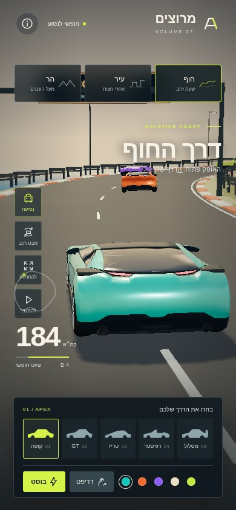
coast · apex · drive · קרוב390×844 · LOD 0 · 90,343 triangles · 92 calls
24 צילומים · 2026-11-04T20:57:26.391Z · 0 שגיאות קונסול · 0 בקשות חיצוניות
# סבב 05 — מקור מפורט, סינון מרחבי ו-LOD 24 צילומים תקינים בשתי המידות נשמרו לאחר תיקון אתחול. גם הכשל הראשוני נשמר: `assets-before-fix.json`, `failure.json`, `load-failure.png`. הוא נגרם משמות גלגלים שקיבלו סיומת בעקבות צומתי מקור ריקים; המחולל תוקן ולא הסתפקנו בעקיפה ב-loader. עברנו לעיבוד ישיר של מקור Car Concept המפורט, במקום הפחתה נוספת של מקור שכבר הופחת. SHA-256 המקור תואם לקובץ הייחוס הרשום בריפו. טקסטורות וסמלים של המקור לא מיוצאים. חישוקים, חומרים ותוספות הם העבודה המקורית של החבילה. השיפור: גימור מרכב נקי יותר; כל קובצי ה-GLB עוברים 452 בדיקות, כולל מאמת Khronos עם 0 שגיאות ו-0 אזהרות. נוסף batching לגלגלים ולגשרי שילוט, מופעי תפאורה חולקו למקטעים מרחביים ומצב איכות חסכוני משתמש באותו קוד בממשק ובבודק. הביקורת: כיסוי קטן באזור יניקת האוויר התברר כחלק חיצוני נחוץ והוחזר בסבב הבא. הסינון הפחית משולשים, אך הגדיל קריאות ציור בחלק מהמבטים; נדרשת פלטת חומר משותפת לתפאורה. נתוני ביצועי תוכנה עדיין נמוכים מהיעד, ואין להסיק מהם ביצועי טלפון. יש להוסיף מבט על ולבדוק את כל המסלול, לא רק המקטע הסמוך לרכב. החלטה: ממשיכים לסבב 06. איכות הקבצים עוברת; סקירת כל הסביבה ואפקטי המהירות עדיין נבדקות.

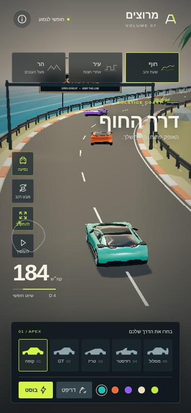
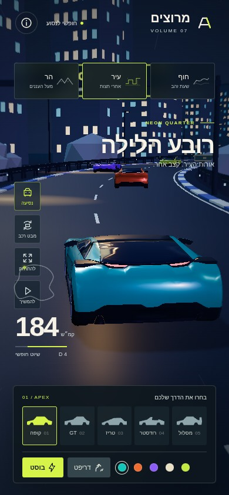
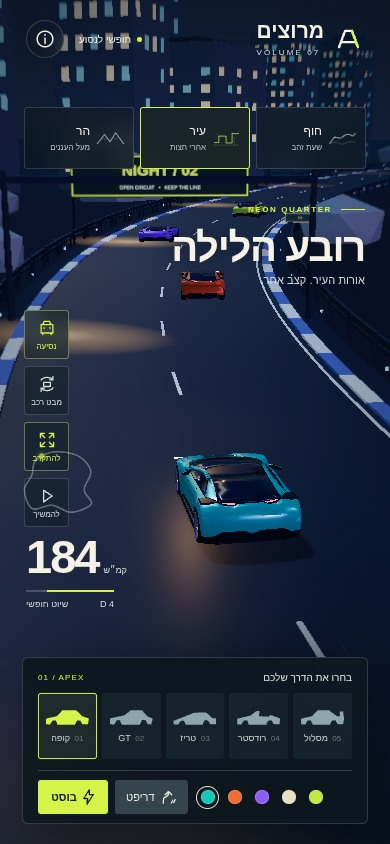
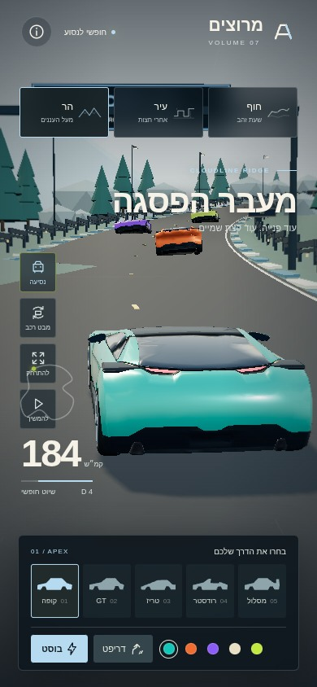
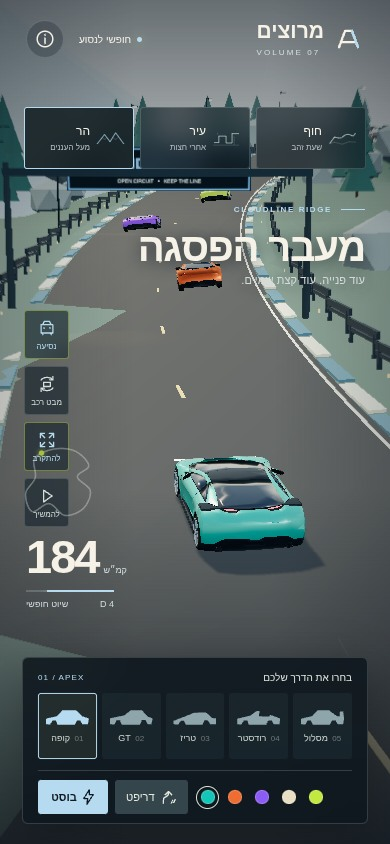
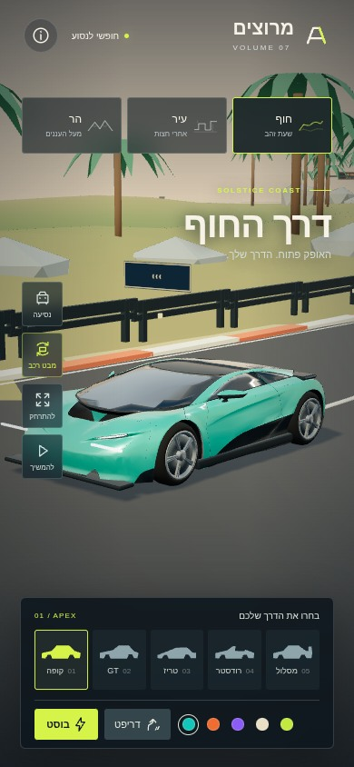
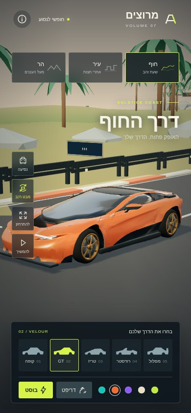
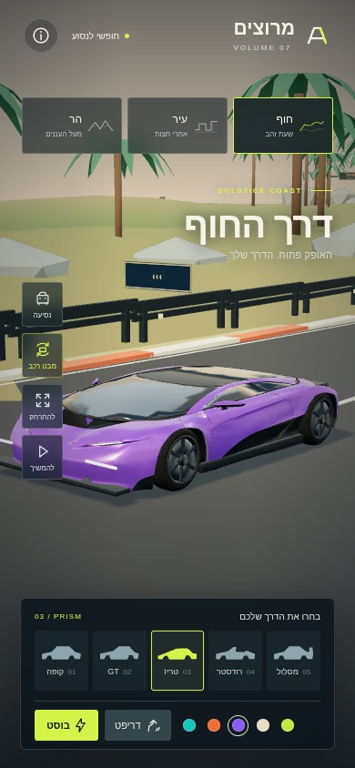
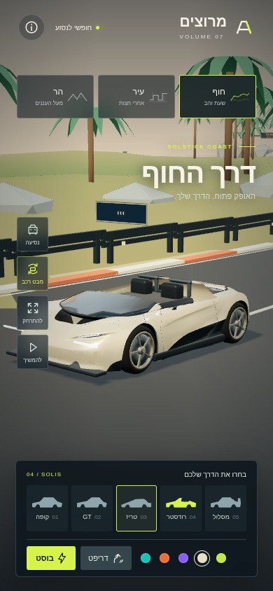
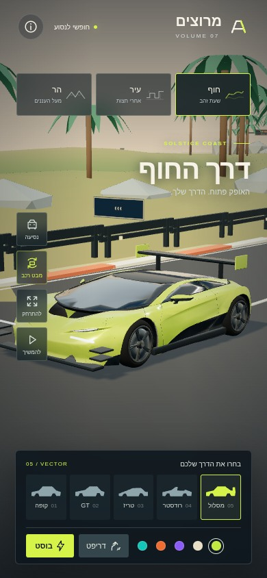
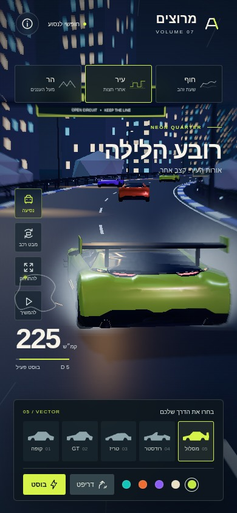
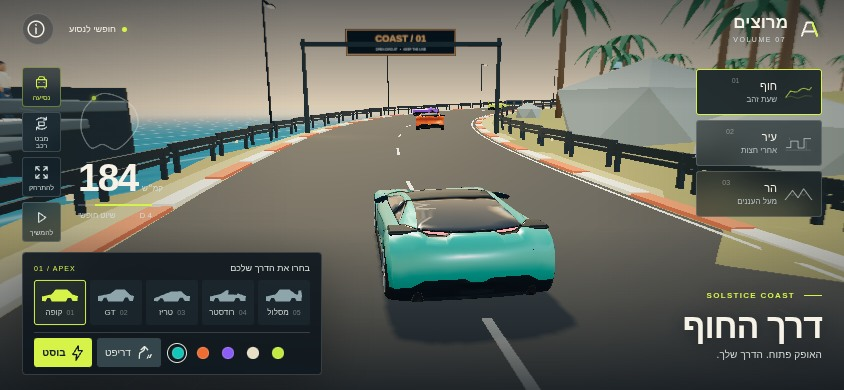
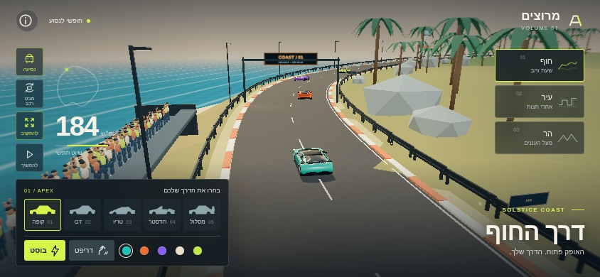
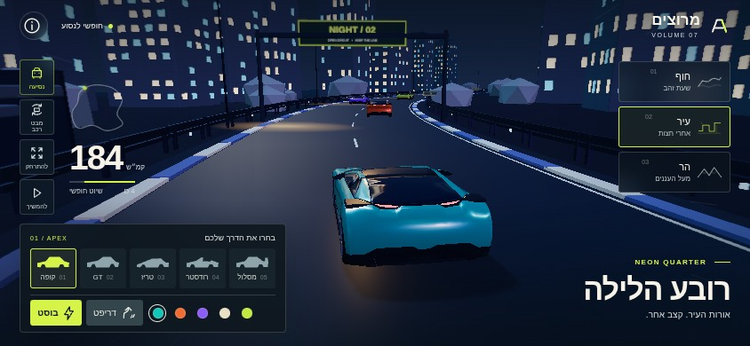
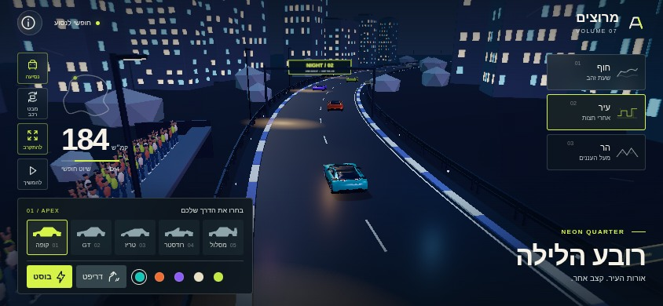
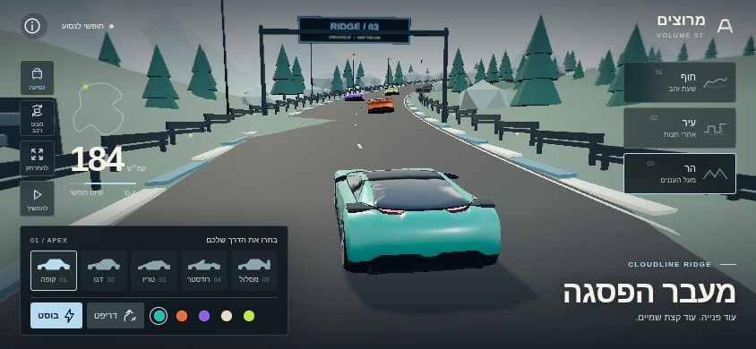
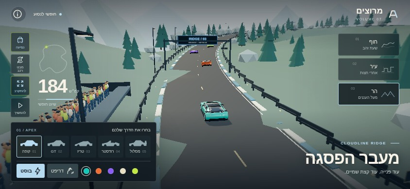
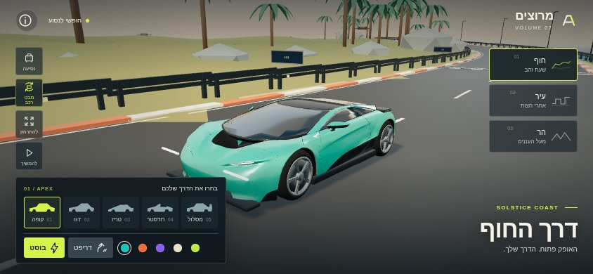
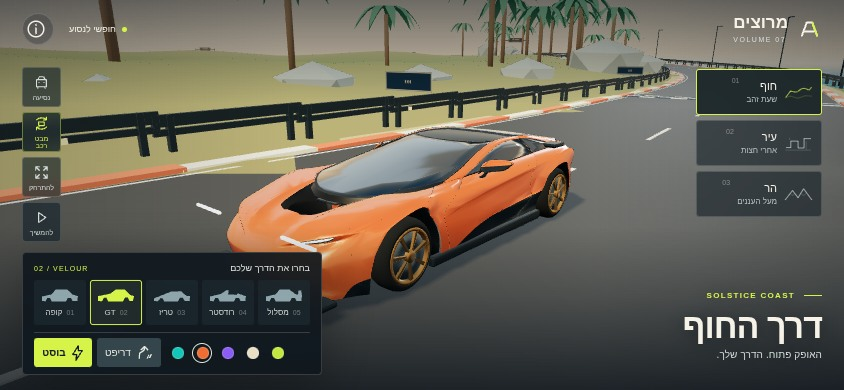
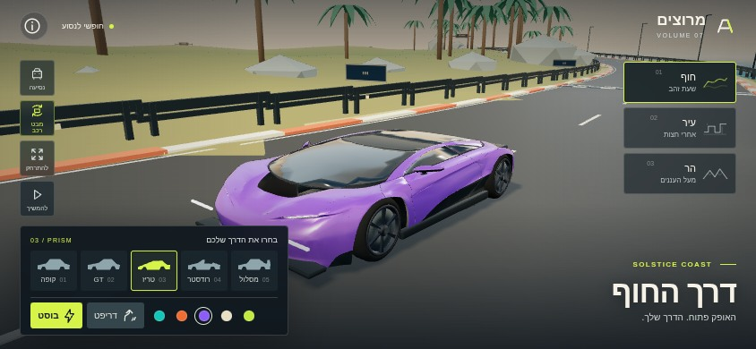
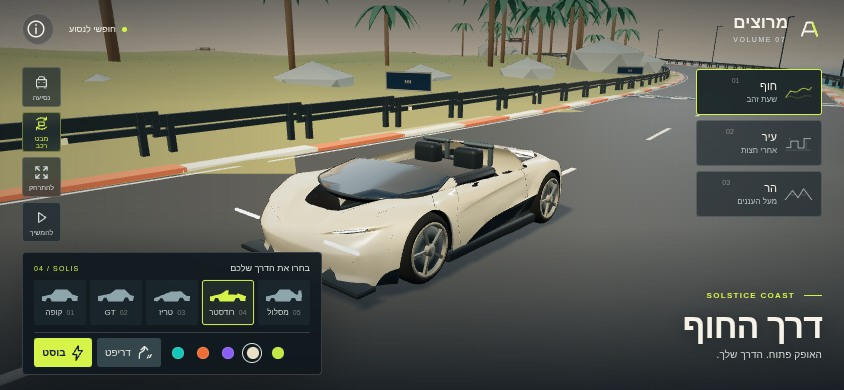
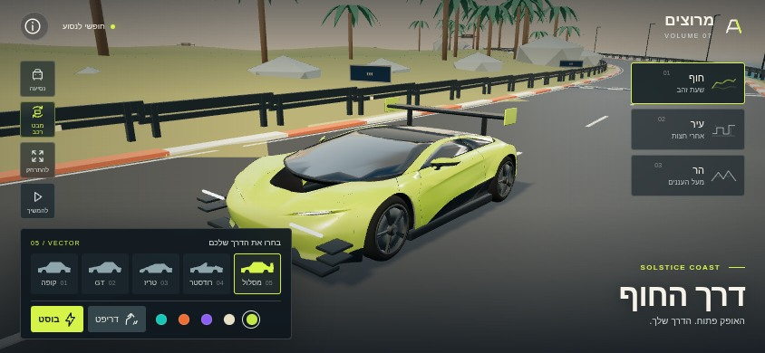
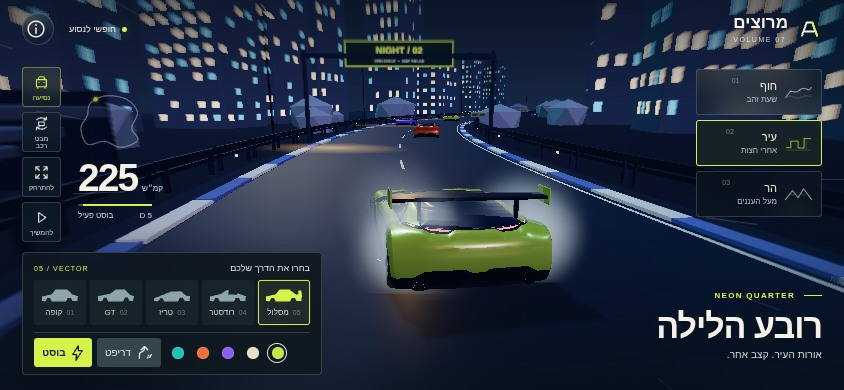